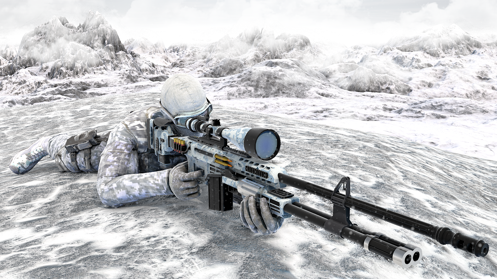
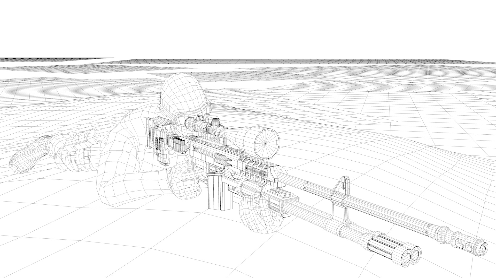
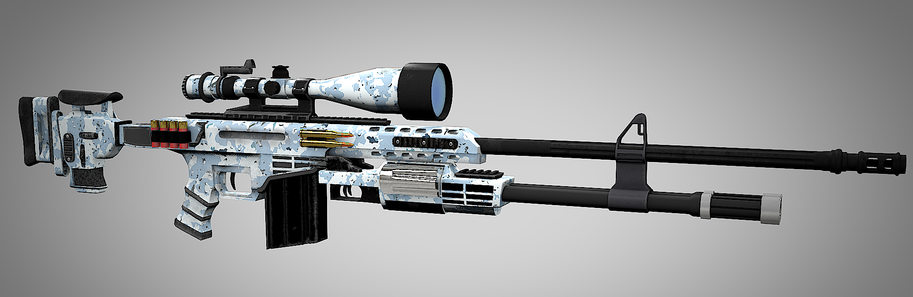
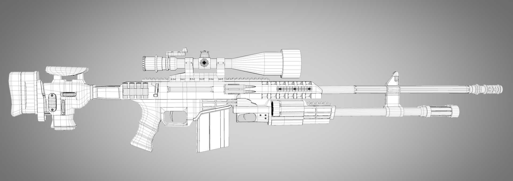

I strive to create things that have never been made before and put unique spins on each render. That is why when I made this sniper rifle, I made it unique with a dual 6-chamber shotgun attachment connected to the underbarrel. This project certainly helped me extend my modeling skills as well as texturing, specifically metal materials. I went back after a year and retextured the rifle in Substance Painter, and experimented with Pixelberg's physically based renderer for Cinema 4D, and modeled the man and environment for a completed project.
Enjoying My Page? Download my résumé
© Matthew Rasey 2017